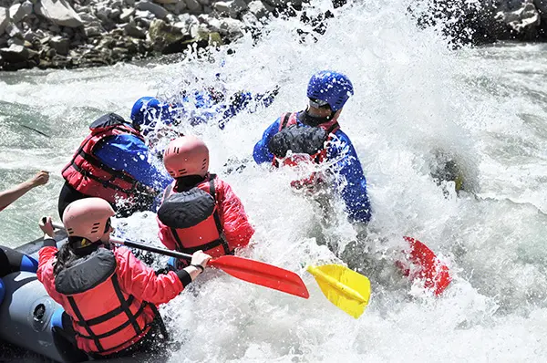

Snake River Rapids Expedition
A thrilling full-day rafting adventure through challenging rapids guided by expert instructors.

Discover exciting rafting adventures designed for families, beginners, and thrill seekers alike.
Contact Us to Book a Trip
A thrilling full-day rafting adventure through challenging rapids guided by expert instructors.

Experience breathtaking canyon scenery and moderate rapids perfect for adventurous explorers.

A relaxing and fun rafting experience designed for families and first-time rafters.
| Trip | Duration | Difficulty |
|---|---|---|
| Snake River Rapids Expedition | Full Day | Advanced |
| Canyon Explorer Tour | 5 Hours | Intermediate |
| Family Float Adventure | 3 Hours | Beginner |